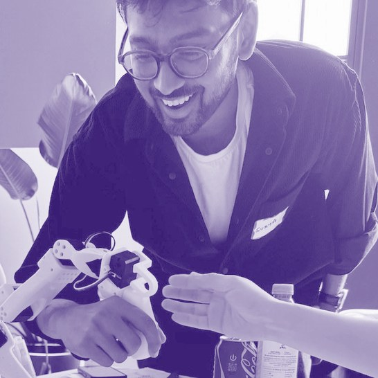
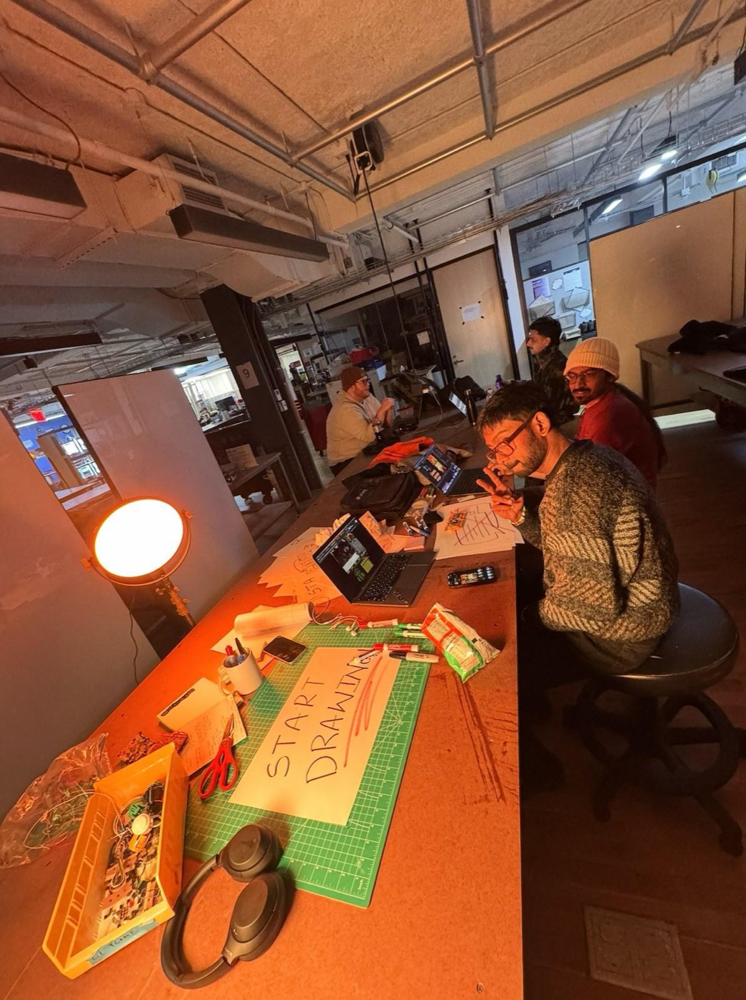
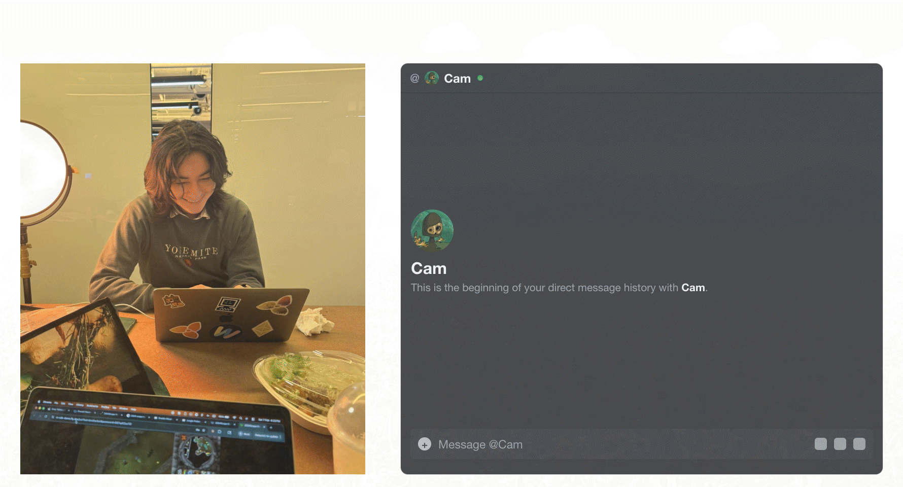
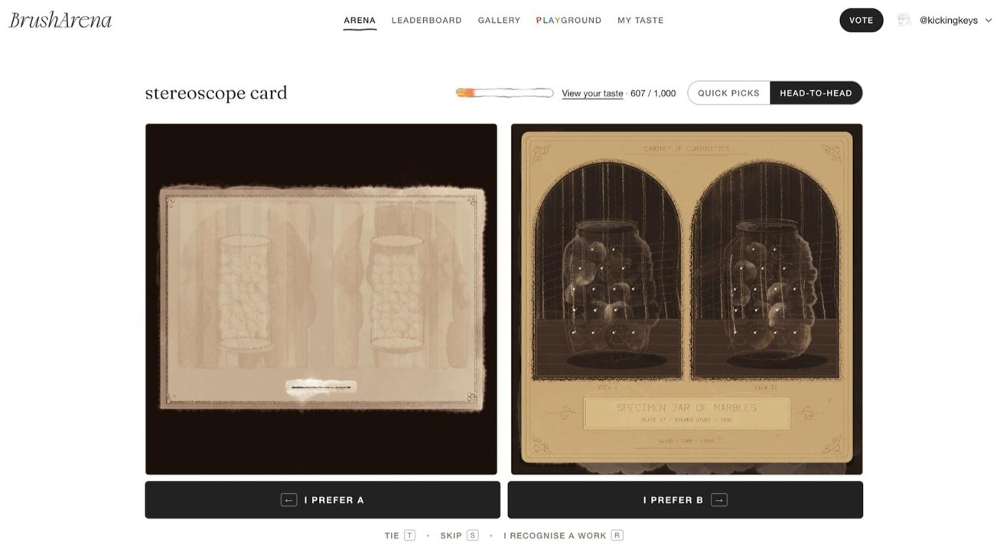
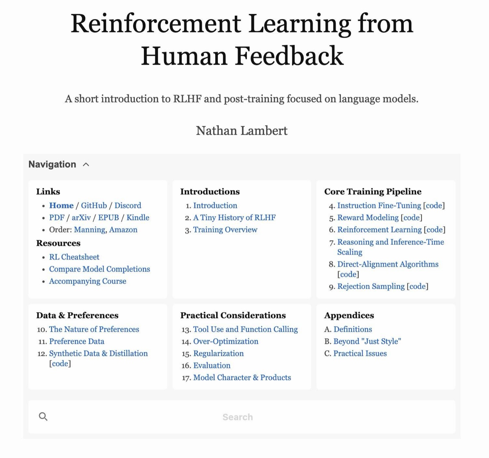
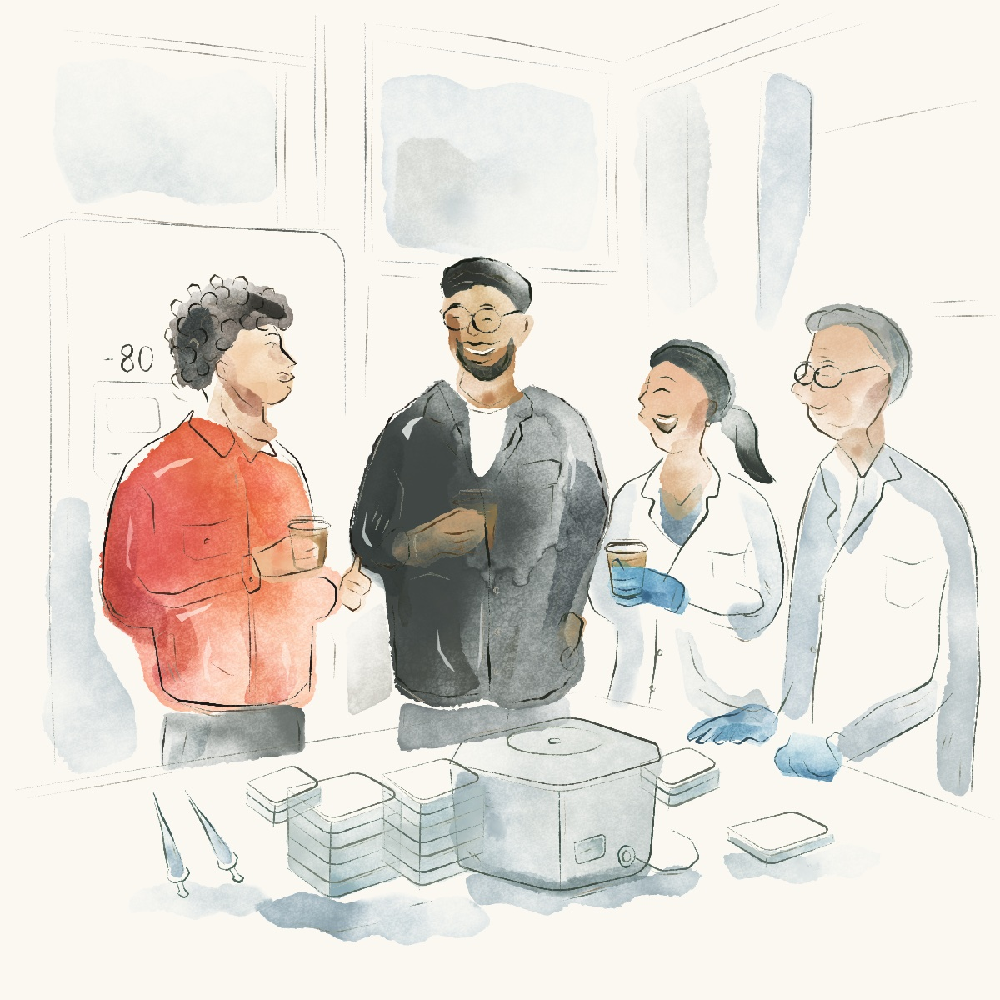
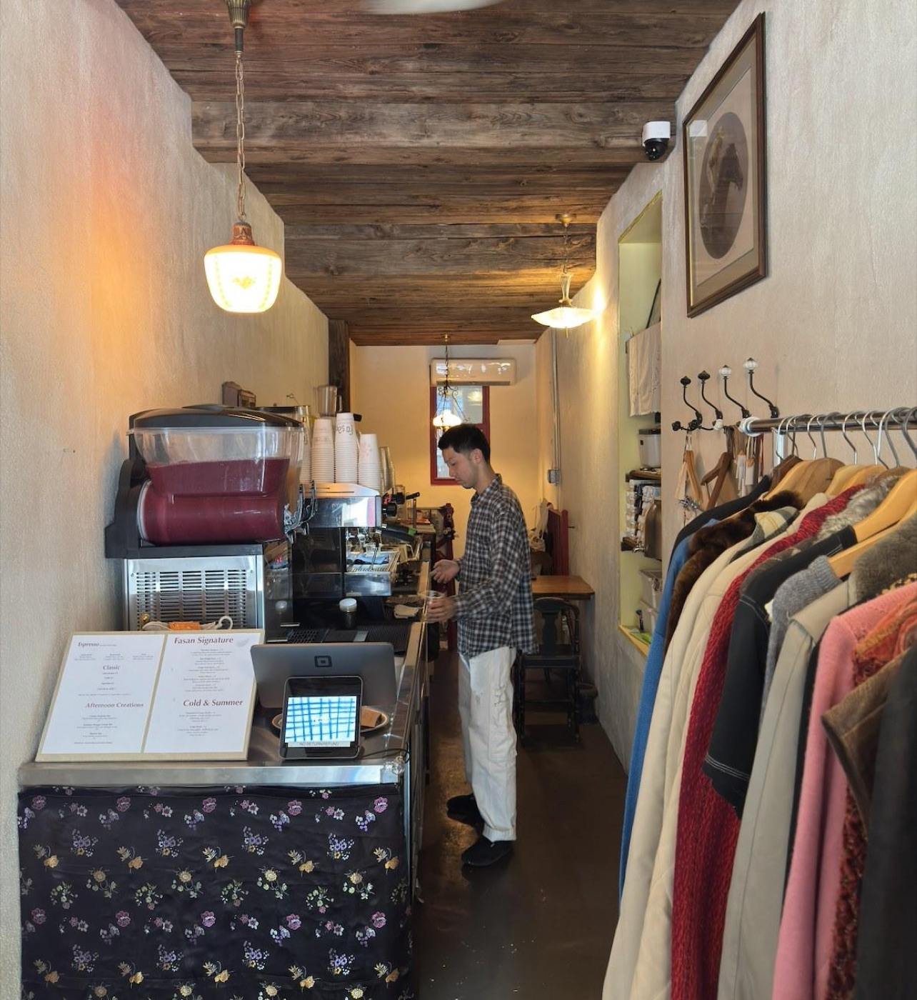
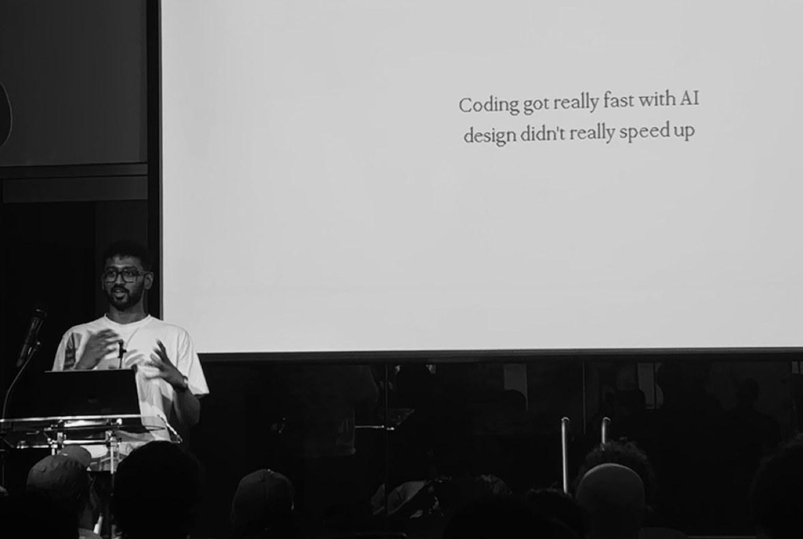
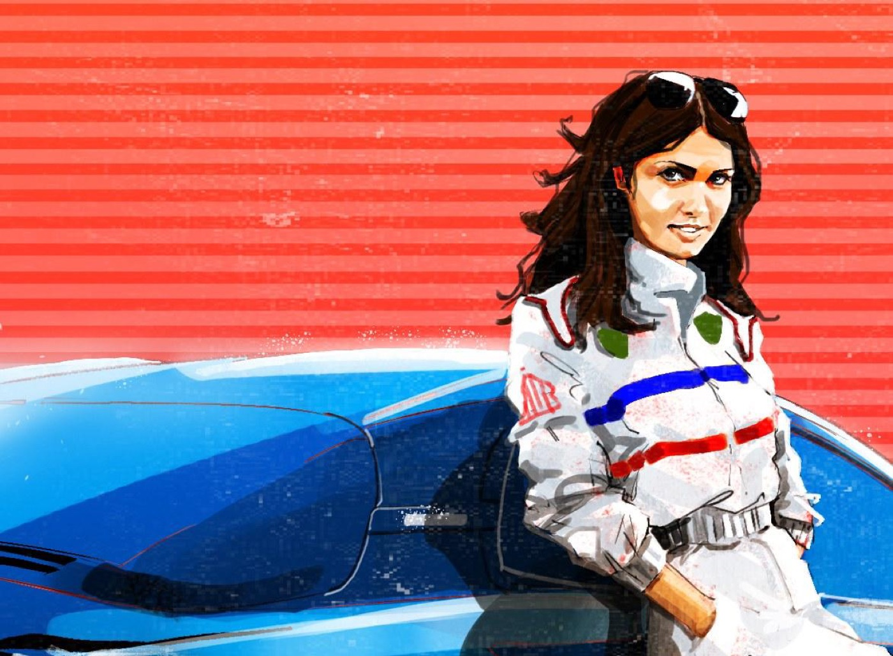
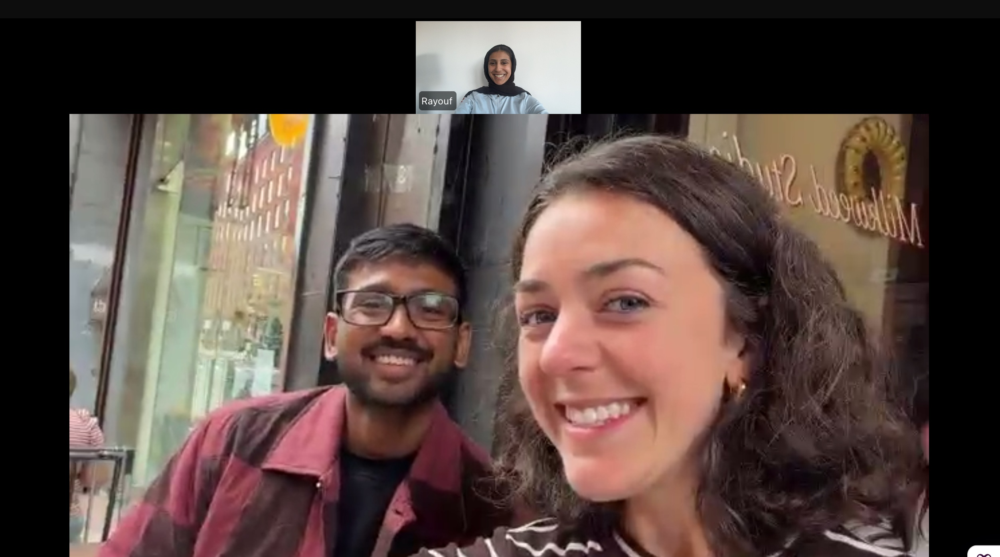

An interview with Surya,
Designer at WebSim
For the love of the game
“I had this crazy idea last night at dinner with friends, so I accidentally was up working on it till 5am. I can’t wait to tell you about it after the interview.” These were Surya’s first words to us as we sat down on the bench outside of Milkweed Studio in Chinatown on a misty Friday morning. This captures Surya’s energy well - he lets his wildest ideas run long distances and is excellent at show-and-tell.
It was through one of these crazy ideas where we discovered Surya in the first place - his viral tweet, “You can just RL a coding model to paint with javascript btw.” When we read his thoughtful writeup on how it works and the process, we thought surely this guy is some fancy CTO or founder that worked at Deepmind or something. So it was pretty mind blowing when we learned that Surya didn’t even know what RL meant before January this year, and he wrote his first line of code in 2024. His story gets even better because, before this, Surya was a civil engineer in Canada, architect in the Netherlands, researcher in a tiger reserve and furniture maker sourcing materials from an invasive species, founder of a product design studio in India, and graduate from NYU’s ITP. Now he is designer at the consumer AI research startup Websim.
Surya is an opinionated designer who is screaming from the front of the parade that the engineers have done their part, and it’s the artists’ turn to figure out what this technology is for. He is also extremely gracious toward the technical friends he “annoyed the hell out of” when he first stepped into AI, the ones who told him, “Code can do anything you want, so what do you want?” He felt strongly enough about this that insisted we tag, link, and thank these people in the interview. His influences aren’t famous AI researchers or celebrity CEOs - they’re the person behind the coffee counter he visits daily, the professors who taught him, and the real friends he’s made from school, NYC, and the internet.
Importantly, Surya is not searching for utility in how he uses AI. He’s exploring what happens when you train different models to paint under the influence of digital drugs (!?). He’s passionate about making AI useful for people in his local communities so they can have their lives back. He’s making agents that watch him and his fellow artist friends working in a studio and turn the footage into a reality-TV-style story (this was his stay-up-til-5am-before-this-interview idea btw).
Surya is doing this for the love of the game.
Who are you and what’s your story?
I’m Surya, a designer and technologist. I used to be an architect. I lived and worked in a tiger reserve for a bit. I started a product design studio and left to come to New York for an art and tech grad school program.
I’m a very pessimistic person, and the way technology is being built is difficult to grapple with. So a lot of my projects are really a way to show myself there’s a better way it can be done.
How did you get from there to this moment, in New York, working with AI?
I was running a product design studio prior to this, and I came to the belief that designers have a much bigger role in shaping the future, especially coming from architecture.
When I saw AI happening, I was still in India, and I was blown away. I was surprised that people around me weren’t shocked, and I knew I wanted to be closer to where this technology was being built. So I decided to go back to school and I knew NY was the creative capital of the world. I chose an art program, ITP, because I think artists are best positioned to work with new innovations even more than engineers. I felt like I had to think like an artist to really imagine the ways this new technology would interact with society, culture and real people. So I figured I’d come here, do stuff, and figure it out.

Did the people in your program feel the same way? What separates the people who see AI as a medium from the people who avoid it?
Most people were experimenting with it and using it. But there were also people who had a distaste for it, or valid criticisms, which I largely agree with. But I wanted to be more pragmatic. There are no Luddites in power. We’re not going to roll back technological progress that’s already in place.
My uncle told me something when I was a kid that stuck with me. He said, “Surya, if you feel like a parade is going off track, you don’t scream from the crowd, because no one’s going to hear you. Get in front of the parade and show them the right way.”
I think that’s why I prefer to make things, and show myself and others alternatives to ideas I believe are misguided and leading us astray.
We first found your work through the viral project where you used RL to train a model to be a paintbrush. How did that come to be?
That project is a collaboration with one of my good friends, Cameron. He’s a free spirit and a true artist.

At the time I had this grievance with generative AI image models. The only way to change the images they produced was by prompting again and again, and they always have this synthetic smell that I disliked. My very first coding language I learned was p5, a JavaScript library where you write some code, press play, and an image comes up. So to me it was obvious that code makes images. If I ask a model to make an image this way, I can edit the code, and the code becomes something the model and I can both participate in.
So I spoke with my friend Cameron and told him, “What if we RL’d a model to draw better images by simply writing code in p5?” He said, let’s do it, and this is why I love him, he’s the only one that took the idea seriously.
How do you explain this to someone who knows little about how AI works?
Most AI image models take your words and give you pixels. It gives you a JPEG file that is not malleable. It’s like you go to a website, you ask for a recipe, they give you a photograph of the dish, and that’s it.
But when you ask a coding model to make images by writing code: you get both — the image and the code behind it. You can look at it, or you can open the code and change a colour, move something, adjust a brushstroke.

We view you as a very AI-technical person now, even though you didn’t have any of this a year ago. How did you learn it?
Yeah it’s interesting because a lot of this was just me looking at resources online and free books like Nathan Lambert’s book on RLHF. I’d read the chapters and have Claude quiz me.

I had never done any ML or heard of RL before January this year. I think there are only two things that matter. How curious are you about these things, and how much time are you willing to give to your curiosity?
And I also relied on people in my life (who are a lot smarter than I am) asking a ton of questions and by annoying the hell out of them. That’s how I learned.
The people I worked with were all alumni of Recurse Center, a programming retreat, and it’s the best place to learn and grow in New York, in my opinion. When I started to code and work in software, Max, Sean, and Cameron, who were alumni, never said “This is not how you do it.” It was always, “Code can do anything you want, so what do you want?”
Something we admire about you is how much you give back to the people around you. Can you speak about that?
I often find that what we’re doing on Twitter is very out of touch with how this technology meets the average person in their daily life. I keep asking myself, is this good? Does this technology empower human agency?
One example project I did recently was with this wet lab in Manhattan. My friend Fabri and I grabbed coffee with one of the lead researchers and asked, have you guys tried AI? They said no so we built them a group chat where they could talk to AI in it. They told us it saved them 10 to 30 percent of their time. They’re doing research for leukemia drugs, and it’s 10 years to get the drugs out. If you can save one to three years, that’s net good, net really good.

Then there’s my friend Kim, who runs a coffee shop called Fasan on Allen Street. Max and I helped him set up an AI tool for his business. The best part wasn’t the time he saved — it’s that he started updating a journal on his website and made a Substack, because now he had the ability and time to write about his life. He writes about how much he loves his wife and his daily interactions with customers. That’s what this is for. You’re doing this so people have their life back.

How does your work at WebSim fuel your creative process?
Being at WebSim has been a life-changing experience. Max (CTO of Websim) was my professor at ITP. The folks there never said an idea wasn’t possible. Instead they asked, why? Is it fun? Was it creative? Was it interesting? That reframed the way I think about software.
WebSim has a very young audience, and when you’re making stuff for kids, you can’t not be creative. Making tools for empowering a creative audience rewires the way you think. Now what I’m most interested in is what it means for people to collaborate with AI agents and other people wielding AI agents, especially for fun. How do you make the internet feel creative again?
How would you describe what you’re exploring in this phase of life?
I have conversations with people where they say something so inspiring that I get nerd sniped. Then I’ve got to go make that feeling into something.
BrushArena was the same. Cameron and I are doing the RL residency at Prime Intellect and we thought we should show people how different models paint.
People seemed to be enamoured with the aesthetic of the paintings but the core of it for us is that we’re very interested in a deeply effortful, collaborative future where humans and machines produce something better than what we could do by ourselves. And I appreciate that people like the outputs, because that means you like the output of a person and a machine collaborating together.

Why do the outputs look and feel like real artwork? You didn’t choose to build a model for logos. What’s the difference?
I’m not searching for utility. A brand guideline and a logo have to check certain boxes. You need a wordmark, it needs to be in this aspect ratio. None of those rules apply to me. It’s just me and a model, and we’re going to make something together that moves us, hopefully for other people or with other people.
And I think that’s a broader problem — everyone is trying to use AI purely for utility. What I love recently is the vibe coding game stuff, where people are mixing and mashing old playstation games together. Let’s use AI for fun too.
I’m making weird, odd things that don’t always serve a purpose. There’s often no utility in my work. That’s what makes it fun. You’ve got to do some things for the love of the game.
How do you reconcile that with so many creatives being against AI?
I think designers have an important role to play in the age of AI. We need to be shaping how these models are trained, helping form their sensibilities, their constraints, what they’re rewarded for, all of which is a very creative act.
What it means to be a designer is changing. That’s the thing designers are having a hard time accepting. I think engineers are held to a more deterministic standard of their work that designers sometimes are not, and that’s why the seat at the table is precarious. Does the software load? Is it fast? Does the database work well? With designers it’s like... is it delightful? Does it feel intuitive? Perhaps that’s harder to measure, but it either is or it’s not, and we need to overcome this problem somehow. Shaping models, I think, is prime surface area for bringing those qualities of work in and helping shepherd this technology.
When AI came along and it was producing slop, I think designers felt like, yes, we’re back in charge. Now the models are getting better and their outputs are getting more tasteful. When you say you’re going to shape these models to not produce slop, that’s a polarizing thing to say. But you can think about it as the layer of work changing, that we’re not being replaced but rather we’re going to be shepherding these machines into producing things that make sense. And of course taste is a moving target, but it’s the continual act of becoming, and just when you have become, the needle has moved on. But that’s ok. It’s how design and good design has always been.
Criticism is valid. I just don’t think you can sit on criticism. You have to do something about it.
Rapid fire
Berkshire Hathaway. Their aesthetics and mythology aren’t visual but have a lot of aura. They run one of the largest companies in the world from Nebraska, not Manhattan, not San Francisco. They’re old school cool, very principled. Substance over spectacle. I really admire them.
Michèle Mouton, the rally driver from the eighties. First woman to ever win a round of the World Rally Championship. She showed all the arrogant dudes up. There’s an interview where she’s asked, “How do you feel as the start time approached?” and she replies, “I don’t feel at all.” Gives me goosebumps everytime.

If you’re in a rut, don’t force yourself to create. Go explore. Go for a walk, talk to random people. Go see someone who does botanical drawings. Curiously inspect things that have nothing to do with your work, because that’s where the ideas come from. Everybody probably tells you to create, but maybe you shouldn’t. Maybe you should observe, listen, and reduce the pressure.
Also, go do stupid hackathons. You’d be surprised how hard it is to think of a stupid, charming idea, because we’re so used to thinking about things for their utility. Make something playful. Express yourself as if you were a child. If you feel anxious about creating, it’s not play anymore. Maybe you need to learn to play again.
Links
- Viral tweetx.com/kickingkeys/status/2091570990048276897
- Cameronhollowaya.dev
- Fabrix.com/fabricated_it
- Kim’s Substackfasancoffee.substack.com/p/thoughts-from-fasan
- Fasan coffeefasancoffee.us
- Morry’s 100 promptswttdotm.com/prompts.html
- BrushArenabrusharena.art
- Recurse Centerwww.recurse.com
- Michèle Mouton reelwww.instagram.com/reel/CzgEQCDo1T4
- ITPitp.nyu.edu
- WebSimwebsim.ai
- p5.jsp5js.org
- Berkshire Hathawayberkshirehathaway.com
